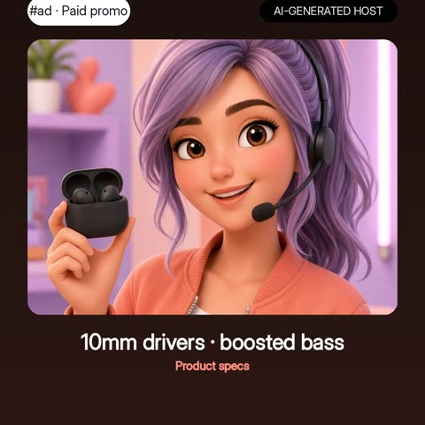
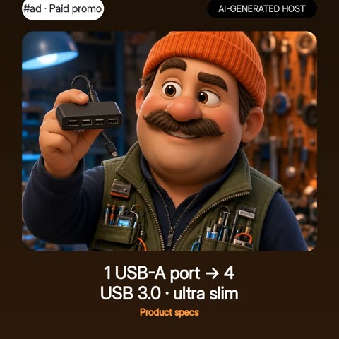
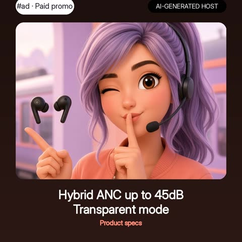
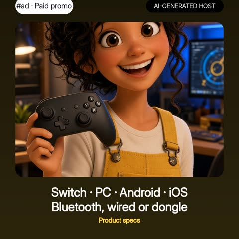

#ad
Everyday Finds Club
As an Amazon Associate I earn from qualifying purchases. Every "See it on Amazon" button is a paid link.
Products from the Everyday Finds Club YouTube Shorts. Find the name you heard in the video. Claims are from each maker's page or Amazon listing; the hosts in the videos (Fin, Gus, Tess and Paige) are AI-generated characters and haven't used these products. Prices and availability change, so check Amazon.

Soundcore P20i
Soundcore by Anker P20i True Wireless Earbuds
- 10mm drivers with boosted bass (per listing)
- Up to 30 hours of playtime with the case (per listing)
- soundcore app with 22 EQ presets (per listing)
For: Everyday listeners on a budget
Skip if: Anyone who wants noise cancelling (not listed)
Nulaxy laptop stand
Nulaxy Ergonomic Adjustable Laptop Stand (dual foldable riser)
- Raises the laptop toward eye level (per listing)
- Dual-foldable, collapses flat for carrying (per listing)
- Fits 10 to 16 inch laptops (per listing)
For: Desk workers and anyone carrying a laptop
Skip if: Laptops larger than 16 inches

Anker USB hub
Anker 4-in-1 USB Hub (4 USB-A ports, 5Gbps)
- Turns one USB-A port into four (per listing)
- 5Gbps data transfer (per listing)
- Not designed to charge devices (per listing)
For: Desks short on USB-A ports
Skip if: Anyone who needs to charge devices through it, or a USB-C-only laptop

TOZO NC9 earbuds
TOZO NC9 Hybrid Active Noise Cancelling Wireless Earbuds
- Hybrid active noise cancelling, up to 45dB noise reduction (per listing)
- Up to 60H with case, ANC off; 40H with ANC on (per listing)
- IPX8 water resistance (per listing)
For: Commuters and travelers
Skip if: Anyone who prefers over-ear headphones

GameSir Nova Lite 2
GameSir Nova Lite 2 Wireless PC Controller (Hall Effect sticks)
- Works with Switch, PC, Android and iOS via Bluetooth, wired or dongle (per listing)
- Hall Effect joysticks (per listing)
- 1000Hz polling rate (per listing)
For: PC and mobile gamers
Skip if: Anyone who wants an official Xbox or PlayStation pad
ESR AirPods Pro 3 case
ESR for AirPods Pro 3 Case (MagSafe-compatible)
- Only compatible with AirPods Pro 3 (2025) (per ESR)
- MagSafe-compatible magnets, charges with the case on (per ESR)
- Magnetic locking lid and wrist/bag strap (per ESR)
For: AirPods Pro 3 owners
Skip if: Anyone with AirPods Pro 2 or older
UGREEN 6-in-1 hub
UGREEN Revodok Pro USB-C Hub 6-in-1 (10Gbps, 4K 60Hz HDMI)
- Two 10Gbps USB-C and two 10Gbps USB-A data ports (per UGREEN)
- 4K at 60Hz HDMI (per UGREEN)
- 100W PD input, up to 85W to the laptop (per UGREEN)
For: One-monitor desk setups
Skip if: Anyone who needs Ethernet or two displays

JLab Go Air Pop+
JLab Go Air Pop+ True Wireless Earbuds
- Case with built-in USB-C cable, 28.8 g (per JLab)
- 9+ hours per earbud, 35+ hours total with the case (per JLab)
- Be Aware mode and Google Fast Pair (per JLab)
For: Pockets, bags and gym totes
Skip if: Anyone who wants active noise cancelling (Be Aware mode is listed instead)
Skullcandy Jib
Skullcandy Jib Wired Earbuds (3.5mm)
- 3.5mm AUX plug (per Skullcandy)
- In-line mic with call, track and volume controls (per Skullcandy)
- Small, medium and large ear gels (per Skullcandy)
For: Travel and stocking stuffers
Skip if: Anyone whose phone has no headphone jack
8BitDo Ultimate 2C
8BitDo Ultimate 2C Wireless Controller (Windows PC and Android)
- Hall Effect joysticks and triggers (per 8BitDo)
- 1000Hz polling on 2.4G and wired (per 8BitDo)
- Remappable L4/R4 bumpers, no software needed (per 8BitDo)
For: PC and Android gamers
Skip if: Anyone who plays on Switch or consoles (listing says Windows and Android)